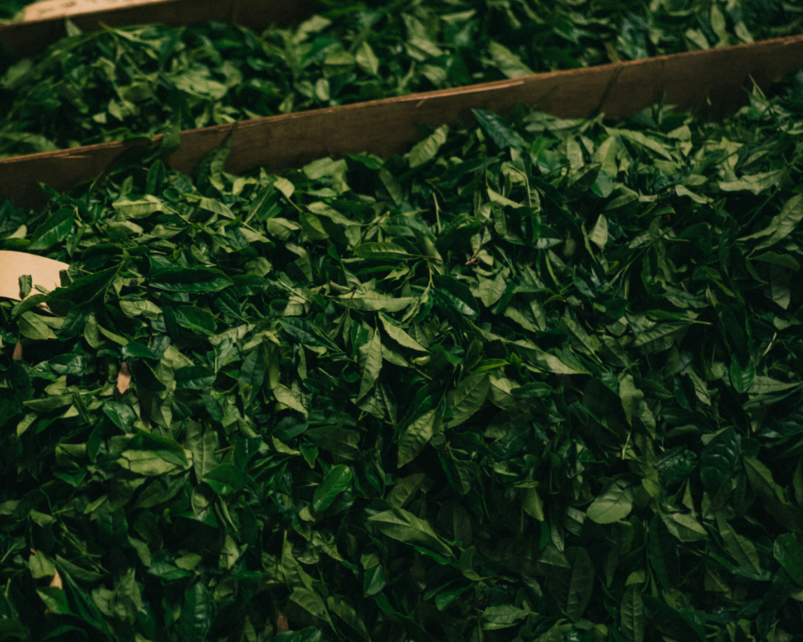

A Challenge to the World

A new cultural expression from Kyokufu-en as it reaches for the world. This is the "Natural-Flavor Wakocha" series—created without any fragrances or additives, boldly combining only authentic citrus peels nurtured by the rich nature of Shikoku’s four prefectures. Based on a gently sweet, subtly nuanced Wakocha made from the premium green-tea cultivar "Yabukita," the artisans' handcraft brings everything into perfect harmony.
Four Flavors

Sudachi (Tokushima)——Lavishly blended with the peel of Tokushima’s famed sudachi. It offers a subtly fresh, vivid green-citrus aroma and a gentle flavor—unlike anything else in Japan.
Yuzu (Kochi)——Combined with yuzu peel ripened under Tosa’s generous sun, presenting a bright, slightly nostalgic Japanese aroma that warms the heart in cold seasons.
Lemon (Kagawa)——Lemon peel kissed by the gentle Seto Inland Sea breezes delivers a crisp, refreshing, and sharply defined clear flavor.
Iyokan (Ehime)——Woven with peel from Ehime’s citrus kingdom, evoking thick-fleshed fruit with juicy, rounded sweetness and an elegant lingering finish.
Ethical Luxury Captured by the Finest Palate

Please enjoy an ethical and luxurious tea in which the leaves—selected with the sure judgment of a producer who holds the highest national tea-evaluation rank ("Tea Evaluation Technique, 9th Dan") and certification as a "Japanese Tea Instructor"—capture the farmers' passion and are sealed into the bottle with absolutely no added fragrances.